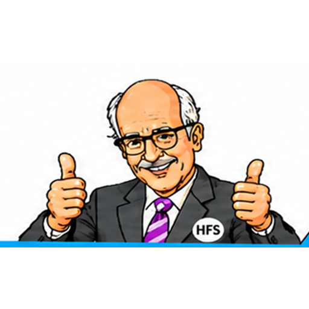
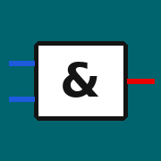

Simulatoren für Elektroniker
Wähle einen Simulator. Er läuft direkt im Browser, auf dem iPad, dem Handy und dem Laptop. Nach dem ersten Öffnen funktioniert er auch ohne Internet.

Schaltungssimulator

LOGO Lab
Als App ablegen
Dann öffnest du die Simulatoren mit einem Fingertipp vom Home-Bildschirm, ohne Adressleiste und auch offline.
iPad und iPhone (Safari)
- Diese Seite in Safari öffnen (nicht in einer anderen App).
- Auf Teilen tippen (Quadrat mit Pfeil nach oben, beim iPad oben rechts, beim iPhone unten).
- Zum Home-Bildschirm wählen. Eventuell musst du dafür in der Liste nach unten wischen.
- Name lassen und auf Hinzufügen tippen.
Du kannst auch jeden Simulator einzeln ablegen: erst öffnen, dann wie oben.
Android-Handy oder -Tablet (Chrome)
- Diese Seite in Chrome öffnen.
- Oben rechts auf ⋮ tippen.
- Zum Startbildschirm hinzufügen oder App installieren wählen und bestätigen.
Laptop oder PC (Chrome, Edge)
- In der Adressleiste rechts auf das Symbol Installieren (Bildschirm mit Pfeil) klicken. Bei Edge: … → Apps → Diese Website als App installieren.
- Alternativ einfach ein Lesezeichen setzen.
Wo werden meine Schaltungen gespeichert?
Deine Schaltungen bleiben auf deinem Gerät, im Speicher des Browsers. Es wird nichts an den Server geschickt. Wenn du den Browserverlauf oder die Websitedaten löschst, sind sie weg. Exportiere wichtige Schaltungen deshalb als Datei (☰ Mehr bzw. Speichern im Simulator).
Abgaben lädst du als Datei dort hoch, wo deine Lehrkraft es sagt (z. B. Moodle).
Für Lehrkräfte: QR-Code für die Klasse
Den Code am Beamer zeigen oder ausdrucken. Wer ihn scannt, landet auf dieser Seite. Mit gewählter Klasse merkt sich das Gerät die Klasse und den Abgabe-Link (aus klassen.json).